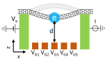

Juliette Monsel¶

Je suis une chercheuse postodoctorale dans le groupe de Janine Splettstoesser au Département de Microtechnologie et Nanoscience à Chalmers University of Technology, à Göteborg, Suède.
J’ai fait mon doctorat sous la supervision d'Alexia Auffèves à l'Institut Néel (CNRS, Université Grenoble Alpes) à Grenoble. Ma thèse, intitulée Thermodynamique quantique et optomécanique, a reçu un prix de thèse Springer et a été publiée dans la série Springer Theses en 2020.
Image générée avec WordCloud à partir de mes résumés arXiv.¶
Les sujets de recherches qui m’intéressent sont :
la thermodynamique quantique
les systèmes quantiques ouverts
l’optomécanique
l’optique quantique
le transport électronique
Récent¶
Nouveau preprint – 26 novembre 2023
Dissipative and dispersive cavity optomechanics with a frequency-dependent mirror
Juliette Monsel, Anastasiia Ciers, Sushanth Kini Manjeshwar, Witlef Wieczorek, Janine Splettstoesser
An optomechanical microcavity can considerably enhance the interaction between light and mechanical motion by confining light to a sub-wavelength volume. However, this comes at the cost of an increased optical loss rate. Therefore, microcavity-based optomechanical systems are placed in the unresolved-sideband regime, preventing sideband-based ground-state cooling. A pathway to reduce optical loss in such systems is to engineer the cavity mirrors, i.e., the optical modes that interact with the mechanical resonator. In our work, we analyze such an optomechanical system, whereby one of the mirrors is strongly frequency-dependent, i.e., a suspended Fano mirror. This optomechanical system consists of two optical modes that couple to the motion of the suspended Fano mirror. We formulate a quantum-coupled-mode description that includes both the standard dispersive optomechanical coupling as well as dissipative coupling. We solve the Langevin equations of the system dynamics in the linear regime showing that ground-state cooling from room temperature can be achieved even if the cavity is per se not in the resolved-sideband regime, but achieves effective sideband resolution through strong optical mode coupling. Importantly, we find that the cavity output spectrum needs to be properly analyzed with respect to the effective laser detuning to infer the phonon occupation of the mechanical resonator. Our work also predicts how to reach the regime of nonlinear quantum optomechanics in a Fano-based microcavity by engineering the properties of the Fano mirror.
This work is the in-depth theory article associated with the experimental work Opt. Express 31, 30212.
Nouvel article – 6 septembre 2023
Non-geometric pumping effects on the performance of interacting quantum-dot heat engines
Juliette Monsel, Jens Schulenborg, Janine Splettstoesser

Periodically driven quantum dots can act as counterparts of cyclic thermal machines at the nanoscale. In the slow-driving regime of geometric pumping, such machines have been shown to operate in analogy to a Carnot cycle. For larger driving frequencies, which are required in order to increase the cooling power, the efficiency of the operation decreases. Up to which frequency a close-to-optimal performance is still possible depends on the magnitude and sign of on-site electron-electron interaction. Extending our previous detailed study on cyclic quantum-dot refrigerators [Phys. Rev. B 106, 035405 (2022)], we here find that the optimal cooling power remains constant up to weak interaction strength compared to the cold-bath temperature. By contrast, the work cost depends on the interaction via the dot’s charge relaxation rate, as the latter sets the typical driving frequency for the onset of non-geometric pumping contributions.
This work is part of the special volume of the Frontier of Quantum and Mesoscopic Thermodynamics conference 2022 in the European Physical Journal Special Topics.
Nouvel article – 30 août 2023
Integrated microcavity optomechanics with a suspended photonic crystal mirror above a distributed Bragg reflector
Sushanth Kini Manjeshwar, Anastasiia Ciers, Juliette Monsel, Hannes Pfeifer, Cindy Peralle, Shu Min Wang, Philippe Tassin, Witlef Wieczorek

Increasing the interaction between light and mechanical resonators is an ongoing endeavor in the field of cavity optomechanics. Optical microcavities allow for boosting the interaction strength through their strong spatial confinement of the optical field. In this work, we follow this approach by realizing a sub-wavelength-long, free-space optomechanical microcavity on-chip fabricated from an (Al,Ga)As heterostructure. A suspended GaAs photonic crystal mirror is acting as a highly reflective mechanical resonator, which together with a distributed Bragg reflector forms an optomechanical microcavity. We demonstrate precise control over the microcavity resonance by change of the photonic crystal parameters. The interplay between the microcavity mode and a guided resonance of the photonic crystal modifies the cavity response and results in a stronger dynamical backaction on the mechanical resonator compared to conventional optomechanical dynamics.
Nouvel article – 9 février 2023
Charge, spin, and heat shot noises in the absence of average currents: Conditions on bounds at zero and finite frequencies
Ludovico Tesser, Matteo Acciai, Christian Spånslätt, Juliette Monsel, Janine Splettstoesser

Nonequilibrium situations where selected currents are suppressed are of interest in fields like thermoelectrics and spintronics, raising the question of how the related noises behave. We study such zero-current charge, spin, and heat noises in a two-terminal mesoscopic conductor. In the presence of voltage, spin and temperature biases, the nonequilibrium (shot) noises of charge, spin, and heat can be arbitrarily large, even if their average currents vanish. However, as soon as a temperature bias is present, additional equilibrium (thermal-like) noise necessarily occurs. We show that this equilibrium noise sets an upper bound on the zero-current charge and spin shot noises, even if additional voltage or spin biases are present. We demonstrate that these bounds can be overcome for heat transport by breaking the spin and electron-hole symmetries, respectively. By contrast, we show that the bound on the charge noise for strictly two-terminal conductors even extends into the finite-frequency regime.
Nouvel article – 7 décembre 2022
Ultrastrong coupling between electron tunneling and mechanical motion
Florian Vigneau, Juliette Monsel, Jorge Tabanera, Kushagra Aggarwal, Léa Bresque, Federico Fedele, Andrew Briggs, Janet Anders, Juan M. R. Parrondo, Alexia Auffèves, and Natalia Ares
We have measured and modelled the coupling strength between single-electron tunneling and nanomechanical motion in a fully-suspended carbon nanotube device. We have found it to be well within the ultrastrong coupling regime, thus opening exciting perspectives for both fundamental research and quantum technologies.
This work is part of the FQxI-funded project Nanomechanics in the solid-state for quantum information thermodynamics.